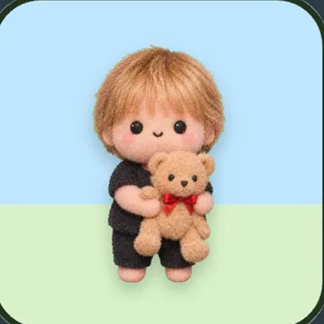
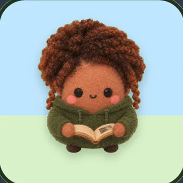
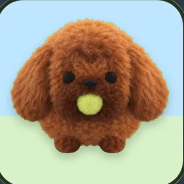
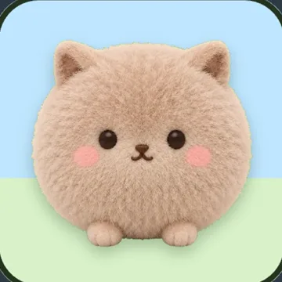
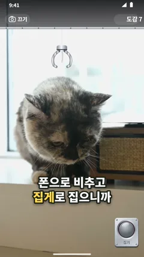
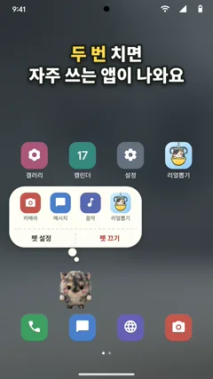

우리 집 고양이가
내 폰에 살아요
폰으로 비추고 집게로 집으면, 찍힌 모습 그대로 털뭉치가 돼서 나와요.





집게로 뽑고카메라에 비친 진짜 녀석을 집어요. 캡슐이 열리면 털뭉치가 나와요.

홈 화면에서 같이 살고톡 치면 좋아하고, 두 번 치면 최근 앱이나 자주 쓰는 앱을 꺼내 줘요.
1. 테스터 그룹 가입
Google 계정으로 그룹에 들어와요.
Google 계정으로 그룹에 들어와요.
2. 참여하고 받기
참여 링크에서 '테스터 되기'를 누르고 Play 스토어에서 받아요.
참여 링크에서 '테스터 되기'를 누르고 Play 스토어에서 받아요.
아이폰은 아직 안 돼요.